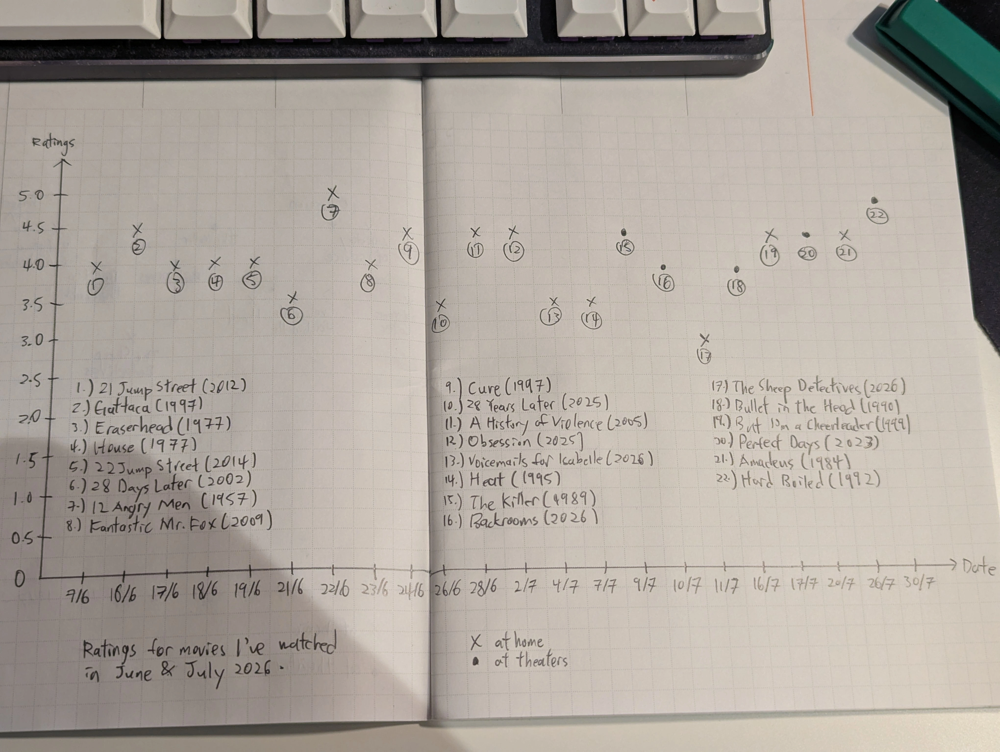

Rankings for movies I've watched in June & July 2026 5/8/2026
Towards the end of 2025 I was influenced by a Youtuber I watched to make a Letterboxd account, a website to track and rate movies. It was not used much until my semester break in June when I had a lot of time on my hands. Letterboxd allows me to export my data anytime in CSV format.

The Creation

trying out the spacing for the x and y axis with an Ikea breadclip because I can't find my ruler

writing out the labels for the x and y axis

plotting

labelling the plots

graph with the title and legends. I'm not too satisfied with the labelling of the points because it feels crowded and it's inconsistent e.g. House, Obsession and Perfect Days.

recreating the graph with numbered points instead
Final Visualisation

I couldn't add lines inbetween movies to link them via the same director because other movies would get in the way and I didn't know how to get around that. Also not sure if writing the titles within the canvas is frowned upon or not, this could've been avoided if I had a bigger piece of paper. I think my average rating is on the higher end because I'm pretty selective on what to watch maybe.